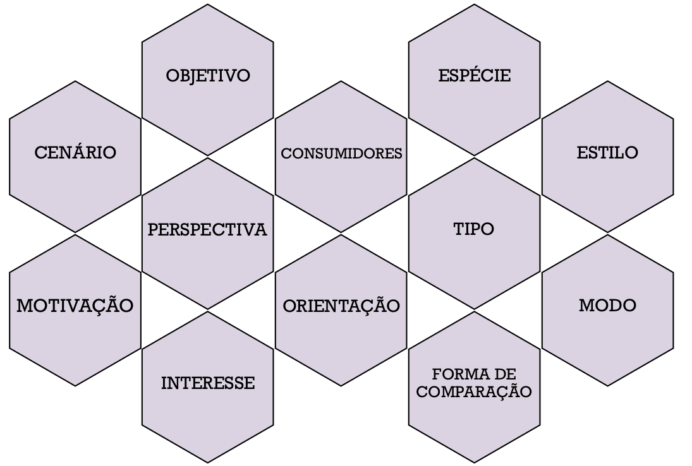
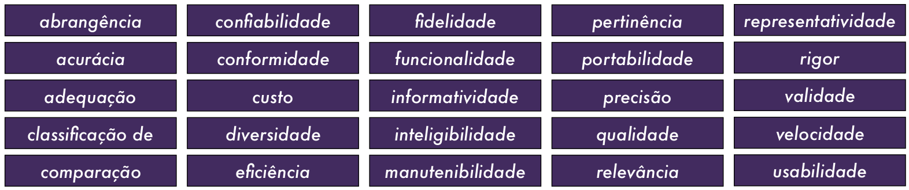
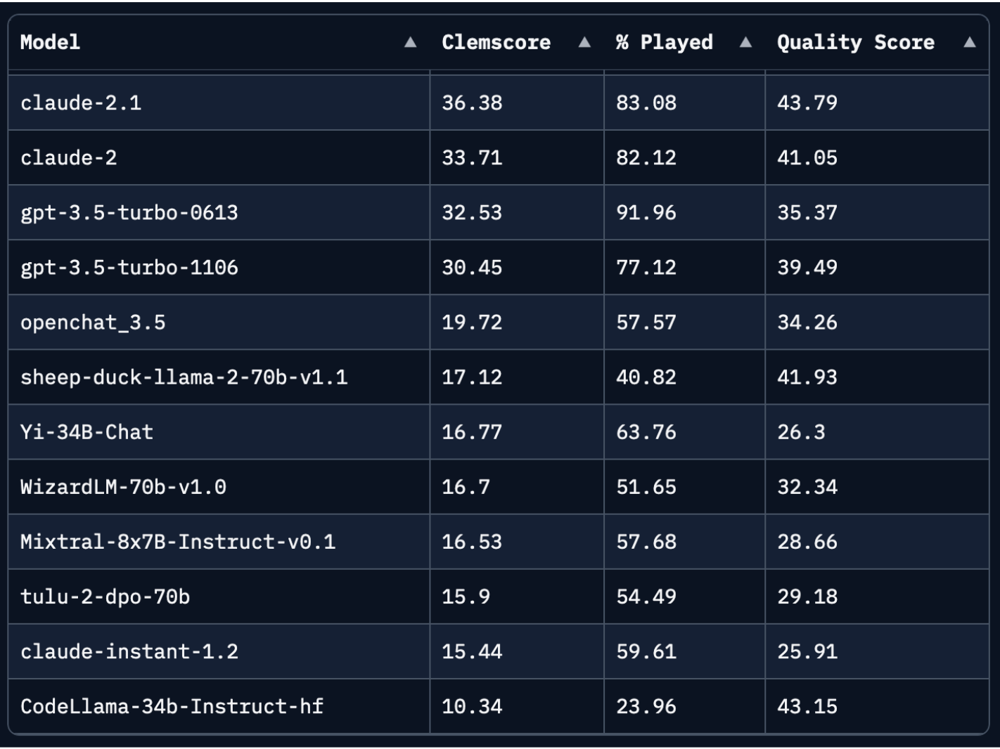
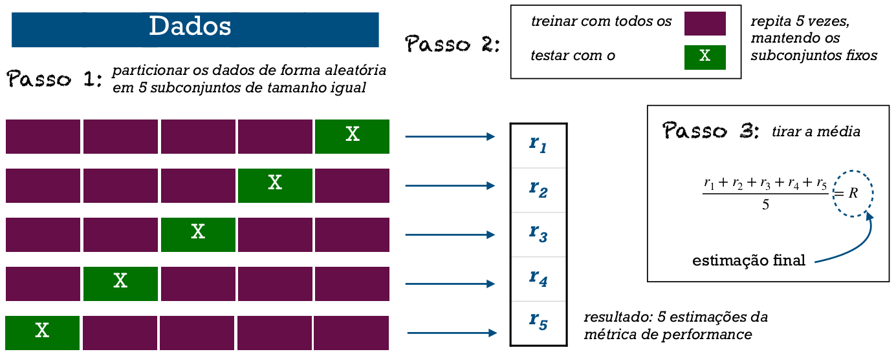
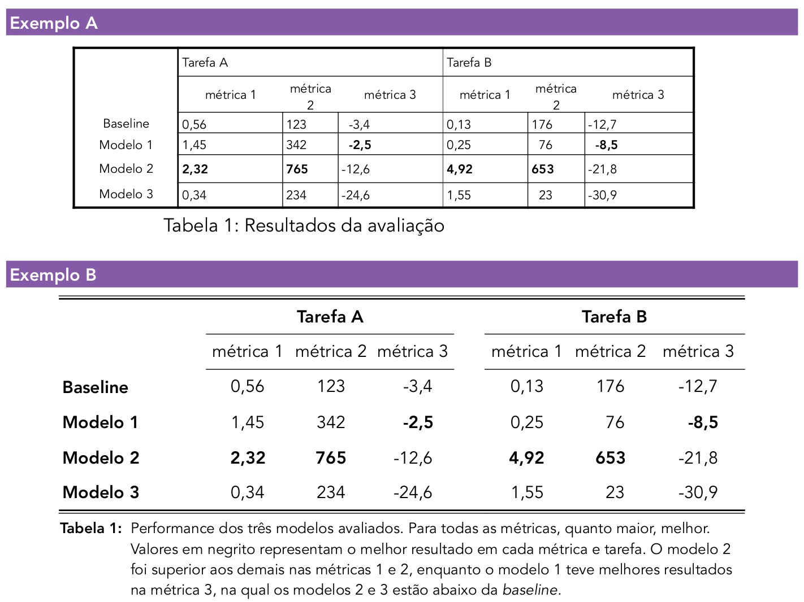
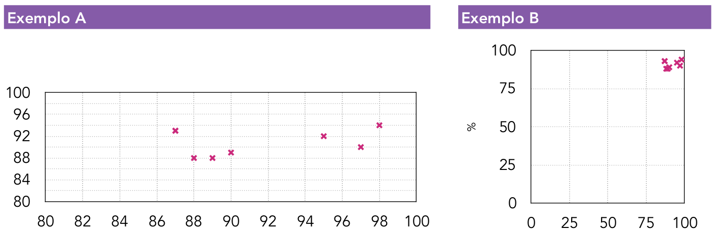

18 Avaliação de tecnologias de linguagem
18.1 Introdução: Avaliando
Imagine que você quer comprar um novo celular. Faz de conta que uma empresa está anunciando um novo modelo chamado weTalk. Sua campanha de marketing garante que o weTalk traz tecnologia de ponta, sendo melhor que todos os concorrentes. Isso lhe convence a já sair comprando? Geralmente, não acreditamos em tudo que a própria empresa que comercializa o aparelho fala, porque o interesse principal dela é vender. Nós buscamos informações de terceiros. Ao ler os depoimentos de clientes, a cena começa a mudar: há muitas pessoas insatisfeitas reclamando que o celular parou de funcionar em poucos dias ou que é muito lento. Uma luz amarela acende, mas como o preço está acessível, você fica em dúvida: arriscar ou optar por um modelo mais caro? Você, então, encontra um relatório de controle de qualidade feito por uma agência de proteção ao cliente, com uma análise bem detalhada, contendo resultados de testes feitos em diversos celulares e uma comparação minuciosa de funcionamento em vários quesitos. Esse modelo recebeu uma baixa classificação. Está decidido, melhor não adquirir o weTalk.
Esse exemplo ilustra que, para tomadas de decisão sobre um produto ou um sistema, precisamos ter acesso a uma avaliação baseada em fontes de informação confiáveis. Em PLN, não basta apenas construirmos modelos, é preciso entender quando e por que eles acertam ou erram para decidirmos se eles estão prontos para serem usados e também para podermos aperfeiçoá-los. Sendo assim, uma avaliação adequada, justa, abrangente, detalhada, sistemática e transparente é um passo essencial ao se desenvolver, construir, analisar, comparar e usar tecnologias de linguagem.
Em PLN, esforços consideráveis são dedicados a conceber, definir e implementar modelos e sistemas que funcionem para determinadas tarefas. Há uma variedade de possibilidades (Sparck Jones, 1994): temos sistemas de PLN avulsos (por exemplo, um algoritmo de segmentação de palavras), sistemas de PLN que dependem de outros sistemas de PLN (um sistema de sumarização que faz uso de um componente de reconhecimento de entidades nomeadas), ou, ainda, sistemas para tarefas que não são majoritariamente linguísticas mas que contêm algum componente de PLN embutido (por exemplo, um sistema de monitoramento de catástrofes que analisa mensagens de texto em redes sociais, entre outros sinais).
Mas como podemos nos certificar de que um sistema está funcionando bem? Ou, antes, o que significa “funcionar bem” em PLN? Qualquer sistema tem uma vasta gama de dimensões que devemos considerar: o que ele faz, qual seu propósito, qual é a manutenção necessária, que custos gera e que benefícios traz, qual é sua performance em variados contextos, quem o utiliza, quando é utilizado, qual a infraestrutura computacional que ele exige, o que pode dar errado, quais as considerações éticas, quem o disponibiliza, como foi desenvolvido, quão fácil é de usar, sob qual licença está etc. Avaliar um sistema abarca tudo isso. Note que são análises que demandam não apenas conhecimento de PLN em si, mas também do cenário econômico, do modelo de negócios, da disponibilidade de recursos, de aspectos sociológicos e morais, além de análise de risco, controle financeiro, pesquisas de satisfação etc. Fugiria da competência deste livro tratar de todos esses temas em pormenores, e evidentemente precisa-se de uma equipe multidisciplinar para avaliar tantos quesitos.
Por isso, neste capítulo vamos restringir um pouco o escopo dessa missão. Trataremos mais precisamente de como medir, analisar e comparar a performance de um sistema, e de como fazê-lo com responsabilidade e transparência. Ao longo dos capítulos desse livro, métodos de avaliação específicos para cada tarefa já foram expostos. A ideia agora é tomarmos uma visão mais panorâmica quanto à avaliação de tecnologias de linguagem como um todo. Mais especificamente, vamos mostrar que procedimentos e ferramentas temos para responder perguntas do tipo:
como medir a qualidade dos outputs produzidos pelo sistema?
o sistema está fazendo o que deveria?
em que casos o sistema está falhando?
o que ocorre quando mudamos algum componente do modelo?
o sistema A tem vantagens sobre o sistema B?
as usuárias e os usuários estão satisfeitos?
como o sistema pode ser melhorado?
Em PLN, tanto a perspectiva computacional quanto a linguística são fundamentais. Apesar de haver intersecção com procedimentos de avaliação em aprendizado de máquina e desenvolvimento de software, apenas importá-los não é suficiente. As línguas humanas em seus diversos usos tem especificidades cruciais que devemos abordar com respeito ao trabalharmos com elas. O conhecimento dos fenômenos da linguagem permite à comunidade de PLN adaptar ou criar procedimentos de avaliação customizados para suas necessidades específicas.
A quem interessa a avaliação? A que público estamos nos dirigindo? Basicamente, a todas as pessoas. Há alguns agentes que ela afeta diretamente: quem pesquisa, desenvolve ou usa um sistema, empresas e seus clientes, autoridades e reguladores (Hirschman; Thompson, 1997; King, 1996). Mas tecnologias de linguagem estão inseridas em um ecossistema, de modo que elas também têm impactos em comunidades como um todo. Inclusive pessoas que não usam um sistema podem acabar sendo indiretamente impactadas por seus efeitos (Friedman et al., 2013). Por exemplo, se um aplicativo de tradução automática falha, haverá erros no texto que se propagam quando for lido por uma pessoa que não teve contato com o sistema de tradução em si.
É fato que toda avaliação está situada em um contexto e deve ser feita de acordo com ele (Belz, 2009; Sparck Jones, 1994). Embora o processo venha se aprimorando ao longo dos anos, com boas (e não tão boas) práticas se consolidando, é uma área de bastante versatilidade em questão de escolha de métricas e procedimentos. Não podemos, portanto, dar uma receita de bolo definitiva sobre como avaliar, apenas indicar perguntas que devem ser feitas e apontar possíveis formas de respondê-las. Vamos nos familiarizar com os principais métodos, técnicas e métricas, além de entender por que a avaliação é um componente crucial em qualquer tarefa, envolvendo muito mais do que a otimização de uma métrica. É algo que exige pensamento crítico e ética, além de uma profunda compressão do contexto no qual o sistema é usado e de uma série de boas práticas.
18.2 Contexto: Por onde começar?
Para começar, vamos contextualizar o tópico deste capítulo fundamentando-o em três eixos: (i) um pouco da trajetória histórica de avaliação em PLN; (ii) a formulação teórica de tarefas de PLN e (iii) uma categorização abstrata dos tipos básicos de tarefas que ocorrem em concepções computacionais envolvendo linguagem humana.
18.2.1 Um pouco de história
Embora seja questionável chamar de histórico algo que ocorreu há menos de 50 anos, vamos voltar algumas décadas para trazer uma perspectiva histórica da consolidação da avaliação em tecnologias de linguagem.
Cohen; Howe (1988) propuseram uma sistematização inicial de avaliação em pesquisa de inteligência artificial, argumentando que, enquanto outras áreas tinham métodos experimentais e técnicas analíticas já bem estabelecidas, a metodologia em inteligência artificial ainda era vaga. Sua proposta divide o ciclo de desenvolvimento em cinco estágios (definição do problema, escolha do método, implementação do método, design de experimentos e apreciação dos resultados), cada um com perguntas e reflexões pertinentes à avaliação, que reproduzimos no apêndice Diretrizes de avaliação. Já estava claro que avaliar vai muito além de métricas de performance: os autores salientaram que avaliar envolve também identificação de deficiências, comunicação, convencimento, responsabilidade e replicabilidade.
Vindo para as tecnologias de linguagem, Paroubek et al. (2007) trazem um panorama dos principais marcos históricos desde 1960. Diversas dessas iniciativas ocorreram em forma de avaliações conjuntas para aplicações específicas, como tradução automática (Capítulo Tradução Automática) e recuperação de informação (Capítulo Recuperação de Informação), pelas quais foram-se construindo propostas e coletando expertise na sistematização da comparação entre sistemas.
Quanto à busca por se pensar na avaliação dirigida ao PLN como um todo, houve em 1980 uma tese de doutorado (Tennant, 1980) notando que muitas iniciativas não eram sistemáticas ou eram incompletas, o que levava a uma certa confusão acerca das conquistas do PLN. O autor menciona que a maioria dos artigos acadêmicos que ele verificou não incluía sequer uma tentativa de se avaliar o sistema, o que chega a ser inconcebível nos dias atuais (ainda bem!). Essa tese propôs uma das tentativas pioneiras de caracterizar a avaliação de tecnologias de linguagem, situando-as nas dimensões de habitalibidade, completude e conceitos abstratos.1 Um pouco depois, em 1988, ocorreu um workshop dedicado à avaliação de sistemas de PLN (Palmer et al., 1988), no qual se percebia que os sistemas já estavam entrando no mercado e era preciso pensar em como avaliá-los, buscando uma perspectiva que funcionasse para além de tarefas específicas. O foco esteve em debater respostas para as seguintes perguntas:
O que são métricas válidas para a performance black box (i.e., quando não se tem acesso aos mecanismos do sistema)?
Quais teorias linguísticas são relevantes para o desenvolvimento de conjuntos de teste?
Como podemos caracterizar eficiência?
Qual é uma expectativa razoável de robustez?
O que constitui conjuntos de dados de treino e de validação válidos?
Como tudo isso se relaciona com medir o progresso da área?
Anos mais tarde, surgem alguns trabalhos proeminentes e concomitantes, com propostas já mais amadurecidas e bem fundamentadas sobre o tema. Sparck Jones; Galliers (1995) publicaram um livro que trata só de avaliação de sistemas de PLN, consolidando-a como uma área suprajacente às tarefas específicas. King (1996) relata que, por muito tempo, avaliações eram, em sua maioria, confidenciais, feitas por agências de consultoria ou revisão de pares. A mentalidade começou a mudar quando a comunidade passou a compartilhar recursos, como materiais de teste, técnicas e resultados. Passou-se a criar conjuntos de teste, ou seja, dados com inputs já mapeados aos outputs desejados, divididos em porcões para treino e teste. Também houve uma transição de mensurações feitas por humanos para tentativas de automatização. Em especial, nesta época podemos citar as iniciativas EAGLES I e II (Group et al., 1996), que buscaram ajustar critérios de ISO 9126 para qualidade de software2 ao contexto de tecnologias de linguagem. Esse projeto formulou uma receita de sete passos, disponível no apêndice EAGLES, além de um extenso relatório com diretrizes primordiais para a área.
De lá pra cá, a comunidade tem dado bastante valor à avaliação. Belz (2009) traz um panorama da situação em 2009, que é aproximadamente o que ainda vigora. Nessa década, já havia técnicas de avaliação bem mais estabelecidas, com foco em comparações e competições. A autora identifica uma supremacia de avaliações voltadas ao desenvolvimento, feitas de forma intrínseca (ou seja, avalia-se o sistema em si) e focando na similaridade entre representações do output do sistema e um gold standard, além de dependência do nem sempre confiável julgamento humano. Veremos mais sobre esses termos na Seção Paradigmas: Tipos de avaliação.
Mais recentemente, podemos citar a série SemEval3 que a cada ano organiza campanhas de avaliação para determinadas tarefas, ajudando a criar recursos e fomentar a comparação de diferentes sistemas. Para saber mais sobre campanhas de avaliação conjunta em português, veja o Capítulo Avaliação conjunta em português. Há também workshops internacionais dedicados exclusivamente a esse tema, como o Eval4NLP4, sobre avaliação em geral, e o HumEval5, sobre avaliação por humanos. A conferência LREC6 também tem um forte foco nesse tópico, e as grandes conferências costumam ter uma sub-área de avaliação. Até mesmo o prêmio de melhor artigo na conferência da ACL de 2020 foi dado a ao trabalho de Ribeiro et al. (2020) sobre esse tema.
Em suma, avaliação de tecnologias de linguagem é um tópico que está em alta, apesar de já vir sendo discutido há décadas. Sabemos avaliar melhor, e como os sistemas passaram realmente a fazer parte do dia a dia das pessoas, há também interesses comerciais ou regulatórios para compreender as consequências de seu uso.
18.2.2 Formalização de problemas e de modelos
Um requisito vital para uma boa avaliação é entender bem o problema que o sistema busca resolver, tanto em sua dimensão linguística como na forma em que é representado matemática ou computacionalmente. Para tanto, é útil formalizar o problema de forma abstrata, para permitir o raciocínio teórico e poder enquadrá-lo em um determinado método ou aproximá-lo de outras tarefas de uma mesma classe. Além disso, quando a tarefa é representada por uma amostra de dados, devemos tentar entender e esquematizar o processo que modela como os dados são gerados.
Para construir uma formalização, temos alguns “tijolos” que a matemática nos oferece: definições formais, suposições, símbolos, conjuntos, tuplas, sequências, operadores, funções, fórmulas, índices, variáveis, relações, constantes, vetores, matrizes, grafos etc. Com esses objetos, podemos seguir os seguintes passos:
pensar sobre o problema de forma sistemática
generalizá-lo a um nível abstrato
listar todas as suposições e condições necessárias, refletir sobre as consequências de relaxar cada uma delas
definir precisamente todos os seus componentes
mencionar suas propriedades relevantes (discreto ou contínuo, categórico ou binário, ordenado ou não, finito ou infinito, domínio e co-domínio, tamanho, cardinalidade, máximo, mínimo, limites, dimensões, condições etc.)
definir símbolos para representar e se referir a cada componente
definir variáveis e parâmetros
explicar como os componentes se relacionam
descrever como os componentes são gerados e manipulados
esquematizar as dinâmicas da tarefa
definir matematicamente como valores e resultados são computados
Ao fazermos uma formalização, é importante sermos consistentes com a notação: cada símbolo deve se referir a um único objeto e vice-versa. Definimos o problema de forma mais geral possível, para depois instanciarmos valores específicos do nosso contexto ou dataset (exemplo, usar \(|V|\) para representar o tamanho do vocabulário, e no problema específico informar que \(|V| = 10.000\)). É interessante tentar achar um equilíbrio entre explicações em linguagem humana e notação matemática, retendo o rigor da formalização mas mantendo a descrição compreensível.
Vamos examinar um exemplo extraído da literatura, formulado por Madureira et al. (2023):
Quadro 18.1 Formalização de rotulagem de sequência
Esta é uma descrição abstrata de qualquer tarefa que consista em designar uma etiqueta para cada item do input, quando as decisões não são feitas de forma isolada para cada um, mas levam em conta o contexto sequencial. É a tarefa que está por trás de, por exemplo, anotação de PoS (Capítulo Sequência de caracteres e palavras) e reconhecimento de entidades nomeadas (Capítulo Extração de Informação). Primeiro foi usada a letra \(L\) para representar um conjunto, com a notação convencional na matemática usando {}, e \(M\) para representar o número de elementos no conjunto. Isso é para que a formulação de adéque posteriormente a qualquer número, pois cada tarefa terá uma quantidade diferente de etiquetas. A letra \(n\) foi usada para representar quantidade de tokens na sequência de input e, consequentemente, na de output, já que se trata de uma relação um pra um. A notação compacta e indexada \((w_i)_{i=1}^n\) foi usada para representar as três sequências (input, output e referência), cada uma com uma letra. Com isso podemos referenciar cada elemento da sequência quando precisarmos, por exemplo, \(w_4\) para o quarto token e \(l_2\) para a segunda etiqueta prevista pelo modelo.
Note, todavia, que os autores não definiram o que é \(w_i\). Fica subentendido que são palavras, mas seria ideal terem também definido um outro conjunto para representar o vocabulário, por exemplo, \(V=\{w_1, \ldots, w_K\}\) e dizer que \(w_i \in V\). Mas deve haver um equilíbrio na formalização, pois seria impraticável definir todos os objetos por completo. Por exemplo, nessa tarefa não importa muito o fato de cada \(w_i\) ser composto de uma sequência de caracteres pertencentes a um alfabeto, por isso esse aspecto foi deixado de fora.
A formalização permite a definição clara e explícita de objetos com os quais vamos trabalhar e de suas relações, servindo para ajudar a exposição ao longo de um documento e também a compreensão de quem o lê. Isso facilita também a definição de métricas e a demonstração de como são computadas, a classificação de erros, e a assimilação do que o modelo faz. Esse passo é particularmente útil para dar mais transparência e rigor para a avaliação.
18.2.3 Caracterização de tarefas de PLN
Palmer et al. (1988) propõem um passo-a-passo para o desenvolvimento de um sistema de PLN:
Escolher a aplicação
Caracterizar os fenômenos necessários
Selecionar as teorias relevantes, se disponíveis
Desenvolver e testar algoritmos que implementem essas teorias
Implementar a primeira versão do sistema
Caracterizar novos fenômenos que aparecem, especialmente os que têm a ver com interações
Refinar os algoritmos para melhorar eficiência, ou substitui-los conforme a caracterização do fenômeno muda
Implementar a segunda versão do sistema
Implementar a terceira versão do sistema, focando em questões de extensibilidade
Trabalhar na quarta e última versão da implementação na qual ele avança para um ambiente de produção; este estágio presta atenção especial às questões de robustez
Pois bem, vamos focar por ora no item 2: caracterizar o problema. Devemos refletir um pouco sobre algumas propriedades de dados em língua humana (veja o Capítulo A ordem e a função das palavras em uma sentença para mais detalhes). As línguas humanas são sequenciais e temporalmente ordenadas, ou seja, cada letra ou palavra ou sentença vem após a outra em uma sequência estabelecida por quem as profere ou escreve. Se embaralharmos as as letras de uma palavra, ou as palavras de uma sentença, ou as sentenças de um texto, eles podem deixar de fazer sentido ou mudar de significado.7 Além disso, sendo uma sequência, ela tem uma representação linearizada ao longo do tempo, mas é também estruturada, com hierarquias sintáticas mais complexas que não são diretamente observáveis na escrita. Além disso, material linguístico escrito é composto de unidades discretas (letras, fonemas, palavras, frases, sentenças, enunciados, parágrafos, textos, conjuntos de textos etc.), que podem ser enumeradas. Já em sua forma oral, há um sinal contínuo, como vemos em um espectrograma. Compreender essas propriedades é necessário para julgarmos que tipos de métodos podem ser aplicados ao nosso objeto de estudo.8
A metodologia que vigora atualmente em PLN se baseia na definição de tarefas de linguagem, isto é, em mapear um conjunto de inputs a um conjunto de outputs, com pelo menos um deles sendo ou contendo linguagem natural, por meio da definição ou da aproximação de uma função (Schlangen, 2019). Há tarefas de compreensão, interpretação, geração, referência e inferência (Schlangen, 2019), embora algumas tarefas acabem não tendo uma aplicação muito garantida (Belz, 2009). Por exemplo, na área de tradução automática, modelam-se funções que mapeiam textos de uma língua (input) para textos em outra língua (output), buscando preservar seu significado. Na geração de legendas, o input é uma imagem e o output é uma frase ou parágrafo que descreve o que está na imagem. É comum que essas funções sejam definidas através de métodos que otimizam parâmetros extraindo padrões e generalizações de uma amostra de dados de input já mapeados a seu respectivo output. Até os modelos de redes neurais artificiais que se tornaram tão populares nada mais são do que uma função (bem complicada) que foi otimizada para mapear inputs a outputs com base em uma amostra de dados.
Há muitas tarefas de linguagem já célebres em PLN (como tradução automática, sumarização de textos e resolução de correferência), mas novas tarefas também podem ser definidas conforme a necessidade e a aplicação. Embora a lista seja longa, há subgrupos de tarefas que se assemelham em termos abstratos, de forma que podemos agrupá-las em algumas categorias principais usadas em métodos matemáticos e de aprendizado de máquina. Resnik; Lin (2010) definem alguns deles: para cada input podemos ter um único output ou múltiplos outputs, sendo que o output pode ser texto, objetos estruturados ou valores em uma escala. No Quadro 18.2, apresentamos uma taxonomia um pouco mais detalhada. Todavia, note que não há delimitações muito rígidas entre esses grupos. É comum haver a estimação de uma pontuação por trás de tarefas de classificação e ranqueamento, por exemplo, e uma sequência é também uma forma de estrutura. Todavia, esses são agrupamentos que nos ajudam a perceber que a tarefa subjacente pode ser a mesma em diversos tipos de problemas de PLN, podendo haver intercâmbio de métodos de modelagem e de avaliação entre eles.
Quadro 18.2 Exemplo de categorias de tarefas de PLN. Em cada uma delas, ou input e/ou output contêm ou são de teor linguístico.
18.3 Paradigmas: Tipos de avaliação
Há várias abordagens e perspectivas possíveis para se avaliar um sistema. Como procedimentos de avaliação variam em propósito, escopo e natureza do objeto avaliado, não conseguimos simplesmente construir uma única ferramenta, ou um único procedimento ou um conjunto de dados de teste padrão para todos os modelos (King, 1996). A avaliação precisa ser moldada e adequada conforme os requisitos de sua circunstância, devendo ser abrangente e sistemática e levar em conta o contexto no qual o sistema está inserido (Sparck Jones, 1994). Ainda assim, há algumas formas já bem estabelecidas que podem nos nortear. Em diversas fontes, encontramos uma divisão em três principais enfoques (Hirschman; Thompson, 1997; King, 1996; Paroubek et al., 2007):
adequação: determinar se um sistema é adequado a um propósito, se atende a necessidades específicas, se ele faz o que deve, como se deve, a que custos etc.
diagnóstico: descrever o perfil de um sistema com base em uma taxonomia do espaço de possíveis inputs, para se compreender onde e por que motivo ele está falhando
performance ou progresso: medir resultados do sistema em uma ou mais áreas, possivelmente comparando-o com outros sistemas, para verificar se ele atingiu ou está em vias de atingir determinadas metas
Sparck Jones (1994) definiu quatro grupos de conceitos que devem ser aplicados em uma avaliação. O primeiro envolve o sistema avaliado e fatores de performance. Aqui, devemos considerar o que é o sistema, em que ambiente ele opera, quais fatores afetam sua performance, quais seus parâmetros e configurações, quais valores foram designados a suas variáveis, quais experimentos são rodados e quais suas funções e objetivos. O segundo grupo diz respeito a tipos e níveis de definição da análise de performance, ou seja, que critérios serão usados (por exemplo, eficiência, efetividade ou aceitação por humanos), como eles serão traduzidos em métricas, quais métodos serão utilizados, e a que o sistema será comparado. No terceiro grupo se encontram as formas dos dados para teste e avaliação. Nesse item devemos considerar o tipo dos dados e quão realistas eles são. Por um lado, precisamos de dados representativos e legítimos para a avaliação, de modo que a distribuição dos fenômenos nos dados seja condizente com a realidade em que o sistema vai funcionar. Por outro lado, devemos considerar a cobertura dos fenômenos linguísticos, podendo-se criar test suites, isto é, exemplos selecionados manualmente que cubram casos específicos que queremos avaliar (ver mais em Seção Datasets pra quê?). Finalmente, o quarto grupo versa sobre estratégias para o design e a condução da avaliação. Devemos ter em mente o objetivo, a alçada e o design da avaliação em si, conforme a proposta de decomposição em critérios ilustrados na Figura 18.1.

Fonte: Adaptado de (Sparck Jones, 1994) e (Sparck Jones; Galliers, 1995).
Boa parte das avaliações em PLN pressupõe a existência de uma referência “padrão ouro” (gold standard), ou seja, a resposta considerada correta. Um procedimento costumeiro é comparar a resposta do sistema com a referência e julgar, com base em uma métrica, quão próximas ou parecidas elas são. Nem sempre é trivial ter uma resposta correta quando lidamos com linguagem natural, devido tanto à multiplicidade de maneiras de se expressar um significado quanto à interpretação humana, que nem sempre está em concordância entre as pessoas (Capítulo E o significado?).
Podemos listar dez pares de características de uma avaliação (Paroubek et al., 2007; Resnik; Lin, 2010; Sparck Jones; Galliers, 1995). Vamos chamá-las dicotomias para frisar o contraste entre os elementos de cada par, mas nada impede que elas sejam usadas em conjunto ou em paralelo, a saber:
manual ou automática: Na avaliação manual, recrutam-se participantes ou avaliadores humanos para que julguem o output de um sistema de acordo com critérios pré-determinados. Nesse caso, a performance do humano acaba sendo avaliada indiretamente junto com o sistema (King, 1996). Na avaliação automática, usam-se algoritmos que computem os critérios de forma automatizada, idealmente aproximando o comportamento ou o julgamento de humanos.
intrínseca e extrínseca: Na avaliação intrínseca, o sistema é diretamente avaliado quanto à sua funcionalidade, com fim em si mesmo. Na avaliação extrínseca, avalia-se o impacto do sistema em uma tarefa externa, da qual ele é um componente.
formativa ou sumativa: A avaliação formativa informa sobre o progresso que está sendo feito, durante o desenvolvimento do sistema, rumo a um certo objetivo, tendo caráter temporário. A avaliação sumativa é aquela conduzida quando se atingiu um marco intermediário ou o final, com caráter mais definitivo.
por usuários ou por especialistas: A avaliação pode ser feita por usuárias e usuários do sistema, que não necessariamente têm conhecimento técnico da tarefa em si ou dos mecanismos, ou pode ser feita por pessoas que têm expertise no domínio ou na implementação.
componente ou ponta-a-ponta: Pode-se avaliar cada componente de um sistema individualmente ou múltiplos componentes funcionando juntos como um todo.
transparente ou às escuras: A avaliação transparente (glass box) tem acesso aos mecanismos que conectam input ao output, e os leva em conta. Já a avaliação às escuras (black box) considera apenas as relações entre input e output, sem conhecer os mecanismos pelos quais elas foram obtidas.
investigativa ou experimental: A avaliação investigativa preocupa-se com um sistema operacional ou um setup e visa estabelecer características de performance, enquanto a experimental busca responder não “o que está acontecendo” mas sim “o que aconteceria se fizéssemos isso ou aquilo”.
qualitativa ou quantitativa: Em avaliações qualitativas, o resultado é um perfil descritivo do comportamento do sistema, com base em aspectos não numéricos. Em avaliações quantitativas, o resultado é dado por valores numéricos através da mensuração de variáveis.
objetiva ou subjetiva: Na avaliação objetiva, as mensurações são feitas diretamente nos dados produzidos pelo processo que está sendo testado. Já a avaliação subjetiva capta mensurações baseadas na percepção que humanos têm de tal processo.
supervisionada ou não-supervisionada: Avaliações de forma supervisionada são feitas com base em um gold standard que traz as respostas ou resultados considerados corretos ou ideais. Avaliações não-supervisionadas não têm um gold standard disponível, de modo que é preciso estabelecer outras formas de julgar a qualidade do sistema.
Há, ainda, diversos atributos de qualidade de um sistema que podem ser levados em conta. Uma seleção deles é mostrada na Figura 18.2.

Fonte: Adaptado de (King, 1996) e do ISO 9126.
Além disso, uma tecnologia é tão boa quanto o uso que se faça dela, e esse uso varia de forma individual (Sparck Jones, 1994). Sendo assim, também é relevante fazer avaliações orientadas aos usuários e usuárias do sistema, incorporando características comportamentais no protocolo de avaliação, tanto em busca de melhorar a performance quanto de compreender como o sistema é usado, em que circunstância e para quais fins (Paroubek et al., 2007).
Avaliação Conjunta e Leaderboards
Há bastante tempo já foi identificado um foco excessivo na busca por atingir boas pontuações ou aumentos incrementais de uma métrica, em detrimento de se fazer uma boa análise (Hirschman; Thompson, 1997).
Hoje em dia, muitas avaliações se resumem a tentar melhorar uma métrica em um leaderboard, ou seja, um tipo de “placar” em que se comparam diferentes sistemas em uma mesma tarefa, ou conjunto de tarefas, chamado benchmark. A Figura 18.3 traz um exemplo de um leaderboard para LLMs. Há uma grande variedade de benchmarks, baseados em uma ou mais tarefas e datasets. Alguns deles se tornaram bem populares, por exemplo MMLU (Hendrycks et al., 2021a, 2021b), GLUE (Wang et al., 2018), SuperGLUE (Wang et al., 2019) e SQuAD (Rajpurkar et al., 2016). Embora esse paradigma ajude a fomentar um progresso mensurável, ele vem acompanhado de muitas críticas. Primeiro, ele tem a competição como cerne, o que pode se tornar algo predatório. Além disso, tentar cegamente atingir a primeira posição em um placar facilmente leva pessoas e equipes a se concentrarem em uma única pontuação, deixando de lado as diversas nuances do fenômeno com que trabalham e as limitações inerentes a qualquer benchmark, por exemplo, sua descontextualização (Raji et al., 2021). Ethayarajh; Jurafsky (2020) argumentam que a utilidade de um sistema é dependente das condições de quem o usa. Ou seja, às vezes o sistema que atinge pontuação máxima é tão computacionalmente custoso que é melhor abrir mão de um pouco de performance mas ter um sistema mais leve. Além disso, nem sempre melhorar a pontuação em um placar equivale a melhorar de fato as habilidades linguísticas de um sistema (Dunietz, 2020; Schlangen, 2021). Dunietz (2020) argumenta, ainda, que a busca incessante por melhorias com base em benchmarks faz perdermos de vista o objetivo real, que é o uso efetivo de uma tecnologia.
clembench (Chalamalasetti et al., 2023). Aqui, modelos de linguagem são comparados em um benchmark de jogos de diálogo através de uma métrica de qualidade e de percentagem de interações bem sucedidas, combinadas em uma pontuação chamada clemscore

As avaliações conjuntas (shared tasks) são eventos organizados pela comunidade nos quais uma tarefa é definida, com dados e métricas padronizados, para fomentar que diferentes soluções sejam propostas e comparadas para o mesmo problema. Elas têm vantagens e desvantagens. Por um lado, ajudam a promover o progresso em subáreas, melhorar o estado da arte, discutir e comparar modelos, e criar recursos; por outro lado, elas se baseiam em competição e confidencialidade, podem ter conflitos de interesse e tirar o foco de questões éticas e de cunho mais amplo sobre um problema (Parra Escartı́n et al., 2017). Para saber mais sobre campanhas de avaliação conjunta em português, veja o Capítulo Avaliação conjunta em português.
18.4 Procedimentos: Como avaliar?
Como vimos, há várias formas de avaliação. Podemos, por exemplo, inspecionar diretamente o funcionamento do sistema, tentar refiná-lo, avaliar suas limitações, compará-lo com outros sistemas, estudar a influência de certos componentes ou parâmetros e verificar quão bem ele funciona em áreas afins (Cohen; Howe, 1988). Vamos agora tratar de alguns procedimentos usuais para se avaliar um sistema, supondo que a avaliação vai ser concretizada em um relatório ou documento expondo uma análise dos resultados.9
18.4.1 Hipóteses e Experimentos
Durante o desenvolvimento de um sistema, usualmente ocorre um ciclo que alterna entre implementação de melhorias ou variações no sistema e experimentos com essas diferentes possibilidades para verificar quais são vantajosas ou atingem performance superior em algum quesito. Para a avaliação final, também é comum testarmos diversas versões do sistema, variando componentes como dados de treino, parâmetros, hiper-parâmetros, versões de código e de bibliotecas, representações dos dados, arquiteturas, métodos de otimização, etc. Cada teste pode ser considerado um experimento para mostrar o efeito de alguma escolha ou algum componente.
Há uma infinidade de possibilidades e é impossível testar exaustivamente todas elas. Dessa forma, devemos tentar definir de forma sistemática quais experimentos são úteis, necessários e suficientes para nossos propósitos, e encontrar uma forma de organizá-los para facilitar comparações e interpretações dos resultados. Não é recomendável simplesmente sair rodando experimentos a esmo. Devemos nos guiar por hipóteses sobre o que seria esperado em cada experimento. Sem uma hipótese ou uma expectativa, fica difícil julgar se o experimento foi realmente informativo ou bem sucedido.
Por exemplo, se queremos desenvolver um sistema que classifica textos como tóxicos ou não. Podemos implementar uma rede neural artificial simples, com uma camada. Verificamos o resultado. Em seguida, melhoramos sua arquitetura usando duas camadas. Qual é nossa expectativa? Esperamos que aumentar a complexidade da arquitetura leve a um resultado melhor. Se isso ocorre, ótimo, prosseguimos com as melhorias. Se isso não ocorre, vamos investigar. Há um erro no código? Há um erro na definição do modelo? Ou será que aumentar a complexidade do modelo é realmente prejudicial nessa tarefa?
Já ha hora de avaliar, podemos querer mostrar o efeito de usar word embeddings pré-treinados no nosso sistema. Qual é a hipótese? Esperamos que eles melhorem a performance em relação a um modelo que usa word embeddings próprios. Rodamos dois experimentos, um com cada tipo, e verificamos os resultados. Se ocorre o que esperamos, demonstramos a vantagem daquele componente para nosso sistema. Se não ocorre, argumentamos sobre os possíveis motivos para nossa hipótese estar errada. Talvez estejamos em um domínio tão específico que word embeddings genéricos não sejam tão úteis. Como podemos verificar isso? Há outros word embeddings que podemos testar? E se fizermos uma análise de dados para verificar a abrangência desses vetores em nosso domínio?
Todos esses raciocínios constroem análises que podem fazer parte do relatório de avaliação. Uma característica essencial de um experimento, e também do procedimento de avaliação como um todo, é que eles sejam reprodutíveis e replicáveis. Se alguém atinge uma certa métrica de performance, anota o resultado, e joga fora todos os dados e recursos que o levaram àquele número, de que ele nos serve, se não é mais possível verificarmos como se chegou a ele? Vamos simplesmente acreditar no que estão nos falando? Toda conclusão deve estar baseada em uma forma de demonstrá-la que seja acessível a quem for se respaldar nessa avaliação para fazer uso do sistema. Avaliação não é um exercício de fé, é algo que precisa de embasamento passível de verificação.
18.4.2 Referências
Mencionamos brevemente, na seção anterior, que é comum o uso de referências “padrão ouro” (gold standards) para se julgar a performance de um sistema. Vamos refletir um pouco sobre por que criar referências é desafiador em PLN através de alguns exemplos.
Há alguns problemas para os quais é relativamente possível definir uma resposta correta. Em um sistema de resolução de referências visuais, queremos que o sistema detecte um único elemento de uma imagem com base em uma referência linguística. Há uma resposta considerada correta, e podemos mais facilmente verificar se o objeto que o sistema detectou é o que desejamos.10 Em sistemas de pergunta e resposta (Capítulo Perguntas e Respostas), há também informações factuais para as quais há um certo consenso: Quanto é 30 dividido por 3? Qual a atual capital do Equador? Quantas estrelas estão representadas na atual bandeira do Brasil? Nesses casos, há uma resposta que podemos considerar correta, e ela costuma estar bem definida (uma vez que consideremos, por exemplo, parâmetros temporais e geográficos).11
Mas a linguagem humana tem ambiguidades e nuances cujas interpretações variam até entre os próprios humanos, além de haver diversas formas de expressar um mesmo conceito ou ideia.
Na tarefa de tradução automática, por exemplo. Vamos imaginar que queremos traduzir a frase the birds will migrate soon; poderíamos traduzi-la, por exemplo, como “os pássaros vão migrar em breve”, ou “as aves logo vão migrar”, ou ainda “logo mais os passarinhos migrarão”. Apesar de terem nuances diferentes, nenhuma dela está errada. Além disso, como geralmente não temos acesso ao que o autor ou autora da frase original realmente queria dizer, não temos como saber qual é, realmente e definitivamente, o significado original. Por isso, a tarefa de tradução automática geralmente trabalha com um referência composta de múltiplos exemplos. Mas note que, ainda assim, eles continuam sendo apenas uma amostra: é bem possível que o sistema gere “em breve haverá migração de aves”, que não está errado, apesar de ser uma construção diferente que não estava entre nossas referências.
Já em sistemas de diálogo, a criação de um gold standard é quase impraticável. A cada momento de uma conversa, há inúmeras formas de continuá-la de forma coerente e válida. Querer que o sistema gere exatamente o que um único humano disse naquele momento, com base em uma única amostra nos dados disponíveis, é bastante limitante.
Geralmente, a criação de uma referência ou de anotação exige uma interpretação post factum, feita por uma pessoa que não é a que originalmente proferiu a frase. Por exemplo, se coletamos posts na internet e queremos julgar se eles contêm ironia: é muito difícil ter certeza, pois não fomos nós que escrevemos o post. Se tivermos acesso ao contexto, podemos ter um pouco mais de segurança na resposta mas, ainda assim, nunca teremos 100% de certeza. Toda anotação por humanos de informações subjetivas vai sofrer desse dilema.
Um ponto importante para a avaliação é que não devemos confiar cegamente no gold standard, considerando-o uma verdade incontestável. Há erros de anotação, bem como divergências legítimas que precisamos considerar (Basile et al., 2020, 2021). Há inclusive um manifesto para que as “divergências” sejam levadas em conta ao se modelar e avaliar sistemas de PLN, em vez de tentarmos eliminá-las.12 Além disso, as próprias instruções dadas aos anotadores podem enviesar os dados que essas pessoas geram (Parmar et al., 2023).
Ter isso em mente não deve nos impedir de usar padrões para avaliação Devemos apenas fazê-lo tendo consciência de que o próprio instrumento que usamos para avaliar pode conter falhas e limitações. Alguns gold standard não serão adequados o suficiente para nosso uso ou, ainda, serão de baixa qualidade. Faz parte da avaliação avaliar não só o sistema como também os materiais que temos para analisá-lo (ver mais na Seção Como avaliar a qualidade do dataset?).
18.4.3 Mensurações
Um componente primordial em avaliações são mensurações. Definimos formas de medir as propriedades e os aspectos relevantes de um sistema como desempenho, qualidade e eficiência, traduzindo-os em métricas, pontuações, estatísticas e medidas. Embora não devamos confiar irrefletidamente nelas, são formas úteis de verificar quão bem (ou mal) um sistema está funcionando e compará-lo com outros sistemas, ou com versões prévias dele mesmo.
Métricas só fazem sentido em seu contexto. Se alguém nos disser que implementou um sistema de detecção de textos tóxicos e atingiu uma métrica de qualidade de 90, o que isso quer dizer? Isoladamente, não quer dizer nada. Não sabemos se o máximo dessa métrica é 100 ou 1000. Se for 100, pode ser uma boa performance, se for 1000 a performance está calamitosa. E se o máximo for 100, mas o valor desejado seja seu mínimo?
Vamos supor que seja 100 e que queremos maximizá-la: isso não garante que atingir 90 faz dele um bom sistema. E se há outros sistemas que, nos mesmos dados, atingem 99,5 e ainda por cima fazem isso de forma mais rápida e com menos memória? Nesse caso, o sistema está bem aquém do estado da arte. Temos também de pensar nos dados. Se o sistema foi avaliado em um conjunto de dados que é balanceado (ou seja, contém por volta de 50% de textos tóxicos e 50% de textos neutros), 90% de acurácia pode ser um número bom. Mas se os dados contiverem 90% de textos neutros e apenas 10% de textos tóxicos, um “sistema” trivial que prediz que todo e qualquer texto é neutro vai atingir 90% de acurácia nesses dados, mesmo não fazendo nada! Quando a classe de interesse é rara, ou há outras formas de desbalanço nos dados da realidade, precisamos nos atentar ainda mais às métricas que usamos, pois algumas delas são enviesadas. Trataremos de métricas em mais detalhes na Seção Métricas: Medindo a performance.
18.4.4 Partição de dados
Em sistemas treinados em dados, tornou-se prática comum particionar os dados que temos disponíveis em dois principais conjuntos: um de treino e um de teste (Resnik; Lin, 2010). Fazemos dessa forma porque os modelos costumam capturar muito bem os dados em que são treinados, mas o que nos interessa realmente é usá-lo na realidade, em dados que só vão existir no futuro. Ou seja, buscamos modelos capazes de generalizar. Se o modelo captar os dados de treino bem demais, ele “decora” as relações entre input e output apenas nesse conjunto e funciona mal para novos dados. Isso é conhecido como overfitting.
Por isso, separamos uma porção dos dados para serem usados apenas na avaliação final do sistema. Não devemos deixar que esses dados tenham qualquer influência no treino, pois eles devem ser uma proxy13 dos dados da realidade que o sistema vai encontrar quando for usado para algum fim de verdade. É ideal nem sequer olhar para eles, pois mesmo que o modelo não os acesse, poderíamos influenciar seu desenvolvimento por saber o que eles contêm.
Mas como fazer, então, para checar resultados durante o desenvolvimento, sem usar os dados de teste? A solução comum é particionar os dados de treino em dois conjuntos: um para treino e um para validação. Os dados de validação são considerados dados de teste para fins de desenvolvimento (ou seja, busca de hiper-parâmetros, escolha de parâmetros, refinamento, verificação de progresso), e também para fazer análises de erro.
Não há uma regra de como fazer essa partição. Devemos ter dados suficientes para o treino, que exige bastante observações de modo a extrair padrões estatísticos, mas também deixando o suficiente para que os testes tenham validade. Uma possibilidade é dividir em 70% para treino, 10% para validação e 20% para teste (mas isso pode variar). É recomendável fazer a partição de forma aleatória, para que a distribuição dos exemplos em cada partição fique relativamente igual.
Entender a distribuição dos dados de treino é importante para escolha dos métodos que vamos implementar. Por exemplo, se estamos trabalhando com classificação e temos dados onde as classes não se distribuem de forma uniforme, pode ser necessário usarmos técnicas específicas de balanceamento dos dados de treino ou da função de otimização. Por isso, embora os dados de teste devam ser deixados fora de acesso, podemos e devemos inspecionar os dados de treino, para entender melhor com que tipo de dados estamos lidando.
18.4.5 Validação Cruzada
A partição de dados em conjuntos fixos de treino, validação e teste é um caso particular de uma técnica mais geral chamada validação cruzada (cross validation) (Resnik; Lin, 2010).14 Uma desvantagem de fixar três conjuntos é que a partição é feita de forma arbitrária. E se, por acaso, todos os casos complicados acabaram indo parar nos dados de teste? O modelo não vai ter acesso a exemplos durante o treino e provavelmente não vai dar boas predições para eles. Mas e se todos os casos complicados ficarem nos dados de treino? Nesse caso, seria fácil atingir uma boa performance no conjunto de validação ou de teste, mas ela não refletiria o que vai ocorrer quando o sistema for usado na vida real. Para um estudo dos efeitos da arbitrariedade da partição nos resultados, ver (Gorman; Bedrick, 2019).
Toda partição vai sofrer dessa questão de arbitrariedade. Uma solução é usar, então, a chamada validação cruzada, que também é útil quando temos poucos dados para fazer uma partição com dados suficientes em cada porção. Nesse procedimento, os resultados são avaliados usando-se \(n\) diferentes partições. Em vez de ter um só resultado, temos \(n\) resultados. Isso nos dá uma distribuição de resultados, para os quais podemos usar análise estatística de dispersão ou simplesmente usar a média e o desvio padrão deles como uma estimação.
Há algumas formas diferentes de se realizar esse procedimento:
holdout: a partição fixa discutida no item anterior, trata-te do caso específico em que uma porção fixa é usada para teste
k-fold: divisão dos dados de treino em \(k\) partições; a cada iteração, uma delas é usada como conjunto de validação e as \(k-1\) demais são usadas para treino
leave-p-out: usar \(p\) itens para validação e todo o resto para treino, alternadamente, de forma a criar todas as possíveis combinações de \(p\) itens para validação
leave-one-out: um caso particular do anterior, em que cada item é usado para validação sozinho
Os dois últimos itens são computacionalmente muito custosos para datasets grandes, pois seria preciso treinar uma grande quantidade de versões do sistema. A Figura 18.4 traz um exemplo da validação k-fold para \(k=5\). Note que, quando um dataset é disponibilizado já com as três partições tradicionais definidas, é interessante segui-las para facilitar a comparação. Todavia, quando uma comunidade inteira está usando os mesmos dados e a mesma partição de teste, pode ocorrer overfitting “comunitário”, otimizando soluções para funcionarem bem apenas nesses dados, um trabalho após o outro, mesmo que os dados não estejam sendo usados diretamente no treino por ninguém (Gorman; Bedrick, 2019).

18.4.6 Comparação de Performance
Assim como o valor numérico de uma métrica sozinho não é muito informativo, o desempenho de um sistema também faz mais sentido se ocorrer em relação a outros sistemas ou às referências chamadas baselines. Há quatro principais baselines com as quais podemos comparar um sistema. A primeira é saber qual o máximo e mínimo teóricos de uma métrica, como discutimos anteriormente, para saber quão perto ou longe o sistema está deles.
A segunda é a performance de predições aleatórias ou feitas de forma muito simples (as chamadas baselines triviais, das quais trataremos a seguir). Elas servem como base de performance mínima: se um sistema tem um desempenho pior do que o aleatório, há algo de muito errado com ele. Um sistema que capturou alguma coisa de significativo do processo precisa ter desempenho melhor do que tomar decisões randômicas.
Em seguida, temos a referência do estado da arte atual, que pode mudar a cada dia. Para que um novo sistema seja considerado melhor, ele deve ter uma performance superior ao atual melhor sistema (em algum aspecto de interesse). Caso contrário, ele pode até ser um sistema bom, mas não há por que usá-lo se já temos um outro que funciona melhor que ele. Claro que há muitas formas de um sistema ser superior a outro: ele pode ter uma performance inferior mas ser mais rápido, e preferirmos usá-lo em um contexto que exija agilidade.
Finalmente, há a referência de performance humana na tarefa, que é considerada um máximo desejável para um sistema, podendo ser estimada por experimentos específicos com humanos ou com métricas de concordância da anotação feita também por vários humanos (Resnik; Lin, 2010) (ver detalhes na Subseção Concordância entre-anotadores). Há sistemas que a “ultrapassam”, mas isso não significa que o sistema é superinteligente: pode ser apenas um caso de a performance humana não levar em conta os desacordos entre anotadores ou ter sido computada em pessoas que não entenderam bem o que tinham de fazer, ou, ainda, haver erros conceituais nas tarefas que compõem o benchmark (Tedeschi et al., 2023). Como esperar que um modelo acerte em um caso em que nem os humanos estão de acordo? Só por escolhas arbitrárias. Humanos cometem erros, se distraem, esquecem instruções ou as interpretam de formas muito variadas. Performance humana é apenas uma referência de quão bem um grupo selecionado de pessoas resolveu aquela tarefa, o que é interpretado como uma meta a se atingir em um sistema para ser considerado competente.
Para facilitar a comparação entre diferentes sistemas, podem-se usar gráficos, tabelas e placares. Voltaremos a esse ponto na Seção Uso Responsável e Boas Práticas.
18.4.7 Testes de Significância Estatística
Uma questão crucial ao se comparar modelos é ter cuidado na hora de generalizar. Se testarmos o modelo A e o modelo B no conjunto de dados D usando a métrica M, e o valor da métrica de A foi melhor do que o da métrica de B, isso não quer dizer que o sistema A é melhor que o sistema B. Só podemos concluir que A foi melhor que B especificamente nos dados D e pela métrica M. Talvez se tivéssemos usado as muitas outras métricas M\(_2\), M\(_3\), M\(_4\) ... a conclusão teria sido diferente. Um valor melhor em uma métrica não é garantia de superioridade, por isso devemos usar várias métricas para se comparar sistemas.
Ainda há algo um pouco menos evidente porém igualmente crítico: e se tivéssemos feito a análise usando outros dados? E se tivéssemos conjuntos de dados D\(_2\), D\(_3\), D\(_4\) para testar? É possível que B fosse melhor que A em todos eles, e que só foi pior em D por puro azar. Talvez D contivesse exemplos muito fora do domínio de B, enquanto D\(_2\), D\(_3\), D\(_4\) são mais representativos da realidade. Esse dilema é conhecido, mas um pouco mais difícil de resolver, porque muitas vezes nós só temos um conjunto de dados D, e produzir outros é muito custoso, demorado ou até inviável.
Nesses casos, há testes de significância estatística que podem nos ajudar quando precisamos argumentar que um sistema se mostra superior a outro conforme uma métrica. Eles tampouco nos dão garantias inquestionáveis, apenas fornecem evidências adicionais de que nossa conclusão pode (ou não) estar correta, e devem ser usados e interpretados com cautela. Há diversos testes, cada um com suas suposições que devem ser levadas em conta. Dois testes úteis em PLN são os testes não-paramétricos de bootstrapping e o de randomização em suas formas pareadas. Ambos se baseiam em simulações para computar as mesmas métricas em diversas amostrar dos dados e estimam um p-valor que indica a probabilidade de observamos a diferença entre A e B, supondo que eles são sistemas equivalentes (a hipótese nula). Quando essa probabilidade é baixa o suficiente, podemos rejeitar essa hipótese, em favor de haver uma diferença. Mas lembre-se: nunca “aceitamos” uma hipótese, apenas rejeitamos ou não rejeitamos a hipótese nula. Dessa forma, a palavra significante só deve ser usada na descrição se resultados se algum teste estatístico foi feito. Para uma exposição mais detalhada dos usos e limitações de testes de significância estatística em PLN, consultar (Berg-Kirkpatrick et al., 2012; Dror et al., 2018; Søgaard et al., 2014) e o subsequente livro (Dror et al., 2020).
18.4.8 Baselines
O termo baseline é comumente usado para dois tipos distintos de referência: a performance trivial e a performance do estado da arte atual. Sparck Jones (1994) usa baseline apenas para o primeiro caso, e benchmark para o segundo. Independente de como os chamemos, o importante é aprendermos os conceitos e suas funções.15
Uma baseline trivial serve para verificar se a performance de um sistema é pelo menos superior ao resultado que teríamos se fizéssemos predições aleatórias (por exemplo, jogando um dado ou uma moeda). Como a performance aleatória costuma ser baixa, há também a possibilidade de definir baselines triviais usando definindo um algoritmo que usa informações muito básicas sobre o problema ou que faz uma predição muito “crua”.
Por exemplo, digamos que tenhamos um sistema que classifica textos de forma binária como sendo ou não sobre o tema de mudanças climáticas. Algumas baselines triviais seriam:
predizer que todos os textos são sobre mudanças climáticas
predizer que nenhum texto é sobre mudanças climáticas
jogar uma moeda: se der cara, classificar o texto como sendo sobre mudanças climáticas
se o texto contiver a palavra “clima”, classificá-lo como sendo sobre mudanças climáticas
Suponhamos que a avaliação esteja sendo feita em um conjunto de dados contendo exatamente 50% de exemplos de cada classe. Nesse contexto, as baselines (a) e (b) atingiriam performance de 50% de acurácia; a baseline (c) atingiria um número bem próximo a esse. Já a opção (d) é um pouco mais informativa, pois ela ao menos leva em conta uma informação (ainda que muito trivial) sobre o problema. Nesse caso, a performance dependeria da natureza dos dados: se houvesse muitos textos sobre previsão do clima, isso iria confundir as predições; mas se os textos que não tratam de mudanças climáticas fossem todos sobre programação, provavelmente essa baseline iria ter uma performance muito boa, pois “clima” seria um termo muito improvável nesse grupo. Nesse contexto, se implementamos um sistema que atinge acurácia de 40%, isso é pior do que simplesmente jogar uma moeda! Ou seja, um sistema, ainda que sofisticado, que não se sobrepõe sequer à performance de uma baseline trivial não capturou nada sobre o processo de classificação (ou há algo de errado em sua implementação).
Mas é preciso cuidado para interpretar baselines. Imagine que nosso conjunto de dados seja desbalanceado (o que é muito comum em fenômenos naturais), contendo apenas 15% de textos sobre mudanças climáticas. Implementamos um classificamos e mensuramos sua performance, observando que atingiu 85% de acurácia. É um valor bem alto, devemos comemorar? Quando inspecionamos os resultados do sistema, temos uma surpresa: todas as predições foram da classe negativa, ou seja, de que o texto não é sobre mudança climática. Como esses textos compõem 85% dos dados, nosso sistema apenas achou um “atalho” para atingir uma acurácia razoavelmente alta sem fazer qualquer classificação. Se tivéssemos computado a baseline da classe mais frequente, teríamos tido ferramentas para imediatamente suspeitar de que algo estava errado.
Baselines triviais servem para capturar esses casos, nos dando um “teste de sanidade” do sistema. Mas toda baseline deve ser interpretada em seu contexto, pois seus valores podem mudar conforme os dados. Elas são especialmente úteis quando estamos implementando um sistema para uma tarefa nova, para a qual não existem ainda resultados referenciais. Quando outros sistemas já existem, e nós queremos propor melhorias, eles se tornam nossas baselines. Nesse caso, são usados para checar se uma nova abordagem produz resultados melhores do que os já atingidos anteriormente. O uso de sistemas que performem pior que o estado da arte só se justifica se o sistema apresentar algum outro tipo de vantagem (por exemplo, uso mais eficiente de memória).
18.4.9 Ablação e Substituição
Por vezes, um sistema depende de diversas fontes de informação, ou de diversos sub-componentes ou de diversos tipos de input. É possível que ele fique tão complexo que não saibamos mais exatamente como os componentes interagem ou se tal nível de complexidade é realmente necessário para manter a performance. Nesse caso, podemos fazer estudos de ablação e de substituição (Cohen; Howe, 1988).
Em estudos de ablação, queremos entender qual é a contribuição das partes para o todo. Nesse caso, removemos um ou mais componentes, mantendo o resto constante, e verificamos como a performance é impactada ou quão bem o sistema “mutilado” consegue sobreviver sem ele(s) (Newell, 1975). Se a performance se mantém equivalente, pode ser interessante não usar esse componente para não termos uma complexidade adicional desnecessária. De forma similar, podemos também examinar o que acontece com a performance se, em vez de removermos um componente, o substituímos por outro.
18.4.10 Análise de Dados
Os modelos de PLN treinados em dados podem captar padrões espúrios, vieses sociais e artefatos da anotação, de modo que as escolhas implícitas e explícitas que fazemos em relação os dados vão afetar a realidade quando esse sistema for posto para atuar (Rogers, 2021). Para avaliar um sistema que foi treinado a partir de dados e de anotações, precisamos entender bem a estrutura, as propriedades e a qualidade desses dados e que influência elas podem ter na performance do sistema. Para tanto, sugerimos a consulta à literatura sobre análise de dados e, se for possível, o diálogo com profissionais especializados nesse tema que é tão vasto. É ideal também a interlocução com profissionais capacitados para análise de dados linguísticos.
Mesmo que seja uma tarefa que vai além da competência desse capítulo, há algumas análises básicas que já são muito informativas para quem desenvolve o sistema. Por exemplo:
Em quais idiomas estão os dados? Qual o gênero, o tema, o dialeto? São textos formais ou informais, em monólogo ou em conversas, escritos ou fala transcrita?
Qual o tamanho e a diversidade do vocabulário? Quão representativo ele é do vocabulário usado nessa tarefa ou nesse gênero?
Quão longos ou curtos são os textos ou as frases?
Quais são os termos mais frequentes? Qual a proporção de tokens que ocorrem apenas uma vez (hapax legomena)?
Que tipos de fenômenos parecem ocorrer com frequência? Por exemplo, referências, negações, perguntas, correferências, erros de digitação, ironias, humor, metáforas?
Os dados contém algum tipo de conteúdo ofensivo ou sensível? É possível filtrá-los ou eles são parte essencial do modelo? Por exemplo, um modelo de detecção de conteúdo tóxico obviamente precisa ser treinado em um dataset com textos tóxicos (mas isso deve ser feito com cautela, ver (Kirk et al., 2022) e Subseção Anotação: sabedoria de especialistas ou sabedoria da multidão?). Já um sistema que gera textos precisa, de alguma forma, filtrar isso.
Qual a distribuição das categorias anotadas? Qual classes são mais ou menos frequentes?
Geralmente, temos uma concepção muito idealizada dos dados em nossa mente, com várias ideias prescritivas de como os dados devem ser. Basta inspecionar qualquer corpus mais de perto para ver que a realidade difere bastante do formato platônico que imaginamos. Para um panorama mais abrangente quanto ao uso de dados em PLN, veja o Capítulo Conjunto de dados, dataset e corpus, (Bender; Friedman, 2018) e (Rogers, 2021).
18.4.11 Análise de Erro
Não devemos considerar apenas o valor nominal de uma métrica para avaliar um sistema. Uma boa avaliação deve, sim, usar métricas, mas em conjunto com uma boa análise de erro. Como o nome diz, o objetivo é analisar os erros, ou seja, buscar entender que tipos de erros (ou de acertos) estão ocorrendo nos outputs do sistema, quando, como, qual a relação entre eles e qual a relação deles com os inputs e com os mecanismos internos do sistema.
Para analisar os erros, devemos entender bem a estrutura dos dados e, se tivermos acesso, também a estrutura e os mecanismos do sistema (ver (Belinkov; Glass, 2019) para um resumo de métodos de análise de modelos). Analisar os erros requer olhar para os outputs. Em PLN, a análise de erro tem uma característica essencial: ou o input ou o output são ou contêm amostras de linguagem natural. O conhecimento linguístico deve, portanto, ser levada em conta na hora de se analisar os problemas do sistema.16
É muito arriscado confiar apenas nas métricas que o sistema computa: temos de pôr a mão na massa e abrir os arquivos contendo o que o sistema efetivamente produziu. Devemos tentar encontrar padrões e conexões entre os erros (por exemplo, pode ser que o sistema sempre se confunda quando há uma negação ou uma palavra que não está no vocabulário), agrupá-los e classificá-los, e buscar entender que componentes do sistema podem estar causando esse comportamento incorreto.17
Erros se propagam de um componente para o outro e de um sistema para o outro, por isso é essencial tentar mitigá-los. Entender por que eles ocorrem serve tanto para melhorar o sistema durante seu desenvolvimento quanto para informar usuários sobre suas limitações. Para saber mais, ver o capítulo 8 em (Freitas, 2022).
18.4.12 Avaliação Humana
Há aspectos da qualidade de um sistema muito difíceis de se expressar por uma métrica, principalmente aspectos linguísticos. Como mensurar fluência, naturalidade, gramaticalidade ou coerência? Muitas dessas propriedades não são binárias e envolvem subjetividade. Métricas automatizadas não conseguem capturar todas as nuances do julgamento e da interpretação humana.
Por isso, uma forma muito comum de avaliação, porém mais demorada e custosa, é usar seres humanos para julgarem a qualidade de um output específico ou quão bom é um sistema em geral. A avaliação humana pode ser feita tanto por experts quanto por leigos e pode avaliar tanto um output isolado quanto comparar outputs de sistemas diferentes. Esse instrumento permite medir aspectos subjetivos, preferências, compreensão e interpretação, e está mais bem alinhada com o propósito final de várias tecnologias de linguagem: utilidade para humanos que vão usá-la para algum fim. As medidas podem ser feitas por escalas Likert,18 observação de comportamentos, questionários, interação com um sistema ou tarefas específicas (Shimorina; Belz, 2022).
Todavia, todo julgamento humano vai ter um viés, e as pessoas nem sempre estão de acordo. Para diminuir o risco de uma medida enviesada ou para capturar de fato a pluralidade inerente ao problema, podemos coletar a opinião de diversas pessoas acerca dos mesmos exemplos, de forma a ter uma distribuição de julgamentos humanos para cada instância que queremos avaliar. Veja o Capítulo Conjunto de dados, dataset e corpus para algumas métricas de concordância.
Devido ao custo e à demora da avaliação humana, o desenvolvimento de uma tecnologia de linguagem pode combiná-la com avaliação automática, que pode ser repetida diversas vezes, deixando a humana para o final de etapas estratégicas durante o desenvolvimento e uso.
A avaliação humana deve ser feita de forma sistemática e prezar pela reprodutibilidade. Se resultados de avaliação humana são reportados para demonstrar que um sistema funciona bem, mas nós não sabemos como essa coleta foi feita e não conseguimos repeti-la, qual o valor dessa informação? De fato, há uma crise na área de PLN, reportada por Belz et al. (2023b) e Belz et al. (2023a), tanto acerca da dificuldade de repetir experimentos de avaliação quanto em campanhas de avaliação que contêm erros em sua implementação, pondo em cheque a validade dos resultados. Belz et al. (2023a) propõem alguns pontos que devem ser bem documentados. Shimorina; Belz (2022) também formulam uma checklist de aspectos (qualidade, propriedades, provocação de respostas, design do experimento, bibliografia e recursos) que devem ser bem pensados e documentados para realização de um experimento de avaliação humana. Para saber mais, recomendamos ter contato com a vasta literatura acerca de avaliação humana, por exemplo, nas edições do workshop HumEval.19
18.4.12.0.1 Crowdworking
Hoje em dia, se tornou usual usar mão de obra humana, através de micro-tarefas em plataformas de colaboração coletiva (crowdsourcing), tanto para gerar e anotar dados quanto para se avaliar sistema de PLN. De fato, é um recurso conveniente e de custo acessível, mas carrega o preço de diversas questões éticas. A pressão por criação de dados em escala massiva fomenta condições precarizadas de trabalho (Paullada et al., 2021). Além disso, há uma despersonalização e um desbalanço de poder na relação entre quem oferta trabalho e quem trabalha, o que gera situações de abuso (Leidner; Plachouras, 2017). Os problemas quanto ao uso de plataformas como a Amazon Mechanical Turk já vêm sendo expostos há mais de dez anos (Fort et al., 2011). Os impasses vão além de garantir um pagamento justo: há discussões sobre tratar os trabalhadores como sujeitos de experimentos, levando em conta direitos de privacidade, riscos psicológicos e grupos vulneráveis (Shmueli et al., 2021). Caso esse recurso seja utilizado, é também preciso lembrar que os trabalhadores podem estar em situação precarizada, com pressa por realizar o máximo de tarefas possíveis para garantir seu ganha pão. Por isso, a qualidade do serviço pode estar em risco, mas não devemos culpabilizar os indivíduos que ofertam trabalho. É preciso realizar testes de compreensão da tarefa e qualidade do trabalho, para garantir que a avaliação seja feita como se deve.
18.5 Métricas: Medindo a performance
Um dos principais procedimentos na avaliação é a medição de variáveis que capturem quão bom é o desempenho de um sistema. Métricas de avaliação são indicadores de performance que expressam o comportamento do sistema ou a qualidade de seus outputs de forma numérica, para tornar possível determinar quanto falta para ele atingir um nível máximo ou um nível desejado de desempenho. Além disso, servem para detectar problemas, quantificar sua acurácia e facilitar sua comparação com outros sistemas. Mas mensurações precisam ter validade interna, externa, estatística e conceitual no que se propõem a medir (Flake; Fried, 2020).
18.5.1 Usando métricas de forma responsável
Há métricas que podem ser implementadas como algoritmos, de forma a permitir, em parte, a automatização da avaliação. Todavia, a automatização só faz sentido se as métricas tiverem correlação com os julgamentos humanos acerca das propriedades desejáveis de um sistema. Ou seja, uma métrica que melhora em termos numéricos sem ocorrer uma melhora correspondente no funcionamento do sistema na vida real não tem muita utilidade.
Lembremos também que métricas são apenas um substituto (proxy) do que realmente queremos medir (e nem sempre é possível), e devem sempre ser usadas com cautela (Belz, 2009; Thomas; Uminsky, 2022). Por exemplo, se uma professora aplica uma prova e computa uma nota, essa nota é usada para medir o desempenho da aluna naquela matéria, naquele momento. Mas ela não captura o que a aluna realmente sabe sobre a matéria, e muito menos deve ser usada para julgar o “nível de inteligência” dela, porque há muitas variáveis em jogo: a aluna poderia estar com dor de cabeça ou com uma preocupação pessoal no momento da prova, ter tido uma crise de ansiedade, saber muito mais sobre vários tópicos que não caíram na prova, mas não saber um tópico específico que compôs a maior parte das questões.
Toda métrica tem limitações, capturando apenas uma faceta de um problema. Métricas tampouco devem ser consideradas de forma isolada: elas sempre estão inseridas em um contexto. É preciso compreensão tanto do fenômeno e do domínio da tarefa quanto da definição da métrica em si para saber interpretá-la. Cada métrica tem seus próprios valores máximo e mínimo, intervalos, escopos e usos apropriados. Boas métricas devem fazer sentido no mundo real, com variações e valores sendo ancorados em processos da realidade.
Finalmente, métricas não são decretos. Em geral, especialistas propõem uma métrica para um determinado problema, ela passa a ser adotada pela comunidade e algumas se tornam bem notórias e populares, ao ponto de parecer que sempre estiveram lá e que são a única forma de se avaliar o sistema. Mas nem sempre devemos apenas seguir tradições. Por um lado, métricas tradicionais são úteis para se comparar um sistema novo com sistemas que já existem. Mas também é possível definir novas métricas ou adaptar métricas existentes para que se adéquem às necessidades do sistema, contanto que isso seja feito para melhoria da avaliação e não para mascarar deficiências do sistema ou distorcer resultados. Eventualmente, é também preciso abandonar métricas tradicionais e adotar novas medidas. De fato, novas métricas nascem o tempo todo.
Por exemplo, tomemos a famosa métrica BLEU (ver Subseção Bilingual Evaluation Under-study (BLEU)) para avaliação de geração de linguagem natural em tradução automática (Capítulo Tradução Automática): ela foi proposta quando o paradigma era usar modelos n-gram, de modo que ela se baseia diretamente em comparações entre n-grams. Hoje em dia, a geração de texto já não costuma se basear mais diretamente neles. A pertinência do BLEU já foi criticada, mostrando que pequenas variações nessa pontuação não têm significado na realidade, e que há métricas mais bem correlacionadas com avaliação humana. Ainda assim, muitos trabalhos continuam a reportá-la, e continua havendo uma busca por aumentos incrementais. Se um sistema alcança um BLEU de 60 e o outro de 63, há alguma melhoria real na qualidade? Essa métrica pode até ser útil para comparações com estudos mais antigos, mas a avaliação não deveria mais focar apenas em aumentar alguns pontos de BLEU20.
Geralmente, uma boa avaliação não deve se concentrar em apenas uma métrica. É primordial ter uma coleção de métricas, cada uma delas capturando diferentes aspectos, para serem interpretadas em conjunto; além disso, elas devem estar acompanhadas de análises qualitativas (Thomas; Uminsky, 2022).
A cada novo projeto, devemos sempre refletir: quais métricas são apropriadas para a avaliação do sistema? Qual seu valor mínimo, qual seu valor bom o suficiente para um determinado uso, qual seu valor máximo? Quanto de variação é necessário para que um sistema seja considerado melhor que o outro? É preciso também consultar a literatura atual para ter contato com as métricas e técnicas que vêm sendo usadas naquela área, quais métricas foram propostas mais recentemente. Em geral, começamos usando métricas mais tradicionais. Depois, podemos partir para métricas propostas mais recentemente. Ao longo do projeto, conforme o problema vai tomando forma e ganhamos expertise, podemos então definir ou adaptar métricas que capturem aquilo que é relevante para o uso que buscamos.
Além disso, a busca por otimização cega de uma métrica é prejudicial. Esse problema é expresso pela Lei de Goodhart, que postula que “quando uma medida torna-se uma meta (ou alvo), ela deixa de ser uma boa medida.”21 Thomas; Uminsky (2022) discutem essa questão, constatando que métricas podem ser (e serão) manipuladas, tendem a dar ênfase excessiva a aspectos de curto prazo e por vezes são coletadas em ambientes desfavoráveis ou danosos. Para mitigar ou minimizar esse problema, eles propõem que sejam feitas auditorias no algoritmo, com o envolvimento de diversas partes envolvidas ou impactadas pelo sistema no processo de desenvolvimento e avaliação, bem como com uso de diversas métricas e de análises qualitativas.
É importante não usar métricas sem a compreensão de como elas são computadas. Mas uma vez munidos dessa compreensão, não precisamos implementar tudo do zero. Há bibliotecas como a sklearn22 e a TorchMetrics23 que já trazem implementações bem testadas e otimizadas, dando mais garantias de que a computação está correta.
18.5.2 Métricas comuns em PLN
Vamos, agora, conhecer algumas das métricas mais comuns em PLN. Elas estão apresentadas no Quadro 18.3. Devemos conhecer as principais famílias de métricas para termos ferramentas com as quais começar a trabalhar, mas, como já foi exposto, novas métricas sempre podem ser definidas, e cada tarefa tem literatura especializada onde diversas opções são aplicadas. Para escolher quais são apropriadas para um problema, devemos pensar em quais são as relações entre o input e o output, e considerar suas propriedades, por exemplo, quais são linguísticas, categóricas, contínuas, sequenciais, etc. e como podemos medir se as respostas do sistema são boas ou desejáveis (Resnik; Lin, 2010), como discutimos na Seção Contexto: Por onde começar?.
Quadro 18.3 Algumas métricas usualmente utilizadas na avaliação de sistemas de PLN.
Essa lista não tem a pretensão de ser exaustiva pois há simplesmente muitas métricas e sempre estão surgindo outras. Além de métricas de aprendizado de máquina, há diversas métricas estatísticas (intervalos de confiança, p-valor), de desempenho de software e eficiência de algoritmos (uso de memória, velocidade, complexidade, tempo de resposta), de análise de negócios (satisfação de usuários, engajamento, custos) entre outras. Há, ainda, métricas que controlam para efeitos aleatórios, como o índice de Rand ajustado e as métricas de concordância de anotadores. Todas podem e devem ser levadas em conta em uma avaliação multidisciplinar.
18.6 Uso Responsável e Boas Práticas
Hoje em dia, o PLN é uma área bem empírica, principalmente o PLN baseado em dados e em técnicas de aprendizado profundo. Para fins de compreensão, transparência e documentação, há uma série de boas práticas que devemos seguir, e que facilitam a avaliação do sistema por parte de quem o usa ou regula. Vamos agora abordar alguns desses tópicos.
18.6.1 Como reportar resultados?
Um relatório de avaliação deve levar em conta o público-alvo, ou seja, ajustar o nível de tecnicidade e de detalhe conforme os diferentes consumidores: clientes e usuário/as, órgãos reguladores, pesquisadores, departamentos internos de uma empresa etc. Ainda assim, há informações que sempre devem ser incluídas e tudo deve ser feito de forma transparente. Ou seja, o relatório não deve apenas “vender” as partes boas do sistema, ele deve também discutir os problemas conhecidos, possíveis impactos e formas de mitigação de riscos.
Além de reportar resultados, documentos de avaliação também devem tratar das seguintes questões:
Por que esse problema existe?
Quais exemplos e dados estão disponíveis? Mostrar alguns desses exemplos.
Qual é o input e o output do sistema (tipo, dimensões, propriedades)?
Como o input é mapeado ao output, isto é, qual é a função definida matematicamente?
Qual modelo é proposto?
Que método de otimização foi utilizado?
Como os parâmetros e hiper-parâmetros foram selecionados? Quais valores foram usados?
Quais corpora e datasets foram utilizados? Qual seu idioma e tamanho? Qual a distribuição dos fenômenos relevantes?
Porque esse modelo serve a essa tarefa?
Quais métricas foram usadas? Como interpretá-as? Quais são seus valores, teóricos, de máximo e mínimo, e qual direção indica melhoria?
Que experimentos foram rodados e com que propósito?
Quais são as limitações, vieses e riscos?
Para quais línguas o sistema foi projetado e avaliado?24
Lipton; Steinhardt (2019) elencam ainda algumas práticas que parecem ser tendência ao se reportar resultados em aprendizado de máquina mas que são prejudiciais: não distinguir entre o que é explicação e o que é especulação, não identificar as fontes dos ganhos empíricos (ou seja, dizer que um sistema que incorporou diversas modificações é melhor sem saber qual parte dele foi responsável pela melhoria), uso da matemática para ofuscar ou impressionar em vez de esclarecer, e mau uso da linguagem, misturando significados coloquiais com técnicos. É também interessante evitar usar verbos e conceitos que antropomorfizem os sistemas, como entender, decidir, pensar, ponderar, compreender ou sentir. O que quer que os sistemas atuais estejam fazendo para resolver as tarefas, não necessariamente estão seguindo processos cognitivos como os dos humanos, por isso a cautela na escolha do vocabulário é importante. Para uma discussão mais detalhada, ver, por exemplo (Watson, 2019), (Placani, 2024) e (Bender, 2024).
Um relatório de avaliação deve construir uma narrativa sobre o que foi feito, quais eram as hipóteses, até que ponto os resultados confirmam ou refutam essas hipóteses, qual a performance do sistema e quando ele não funciona bem. Descrever tudo isso pode virar uma longa novela, e expressar tudo em texto acaba ficando monótono. Por isso, é essencial usar outros meios complementares. Os principais são tabelas e gráficos. Eles devem ter um propósito, ou seja, fazer parte da narrativa, mostrarem os resultados de forma clara e transparente, sem dar margem a confusão (muito menos deliberadamente!).
Podemos usar as tabelas e gráficos para organizar e expor informações visualmente de forma a facilitar a compreensão do público, dando evidências e respaldos para interpretações dos resultados e das conclusões. Tabelas são mais apropriadas em contextos nos quais os números exatos dos resultados importam. Já gráficos são mais pertinentes quando se quer mostrar relações entre números ou sua evolução ou variação em função de algum parâmetro (por exemplo, tempo ou tamanho).
Além disso, a estética importa muito! A apresentação e o estilo das tabelas e gráficos devem facilitar sua leitura e interpretação, e, preferencialmente, serem bem organizados e agradáveis aos olhos. Há diversos tipos de gráfico, e cada um funciona melhor para um tipo de informação. O uso de cores deve ser feito levando em conta que existem formas de daltonismo, de modo que o contraste precisa ser mantido. Figuras devem vir acompanhadas de descrições textuais para as pessoas com impedimentos visuais. Um livro de acesso aberto muito útil sobre boas práticas de apresentação está disponível em https://clauswilke.com/dataviz/ por Claus O. Wilke. As regras de formatação da ABNT para trabalhos acadêmicos também podem ser úteis no contexto brasileiro, de modo a deixar as tabelas limpas e bem alinhadas, mesmo em contextos que permitam mais criatividade na apresentação dos resultados. Por exemplo, um relatório institucional vai seguir as regras de imagem da empresa em questão de cores e fontes. Na Figura 18.5, mostramos um exemplo de como apenas detalhes de formatação podem dificultar a visualização de uma tabela, deixando-a confusa e desorganizada.

Todos gráficos e tabelas devem vir acompanhados de uma legenda que informe o que está representado neles e quais as principais conclusões podemos tirar dessa informação. A legenda e o gráfico devem formar uma unidade de informação que possa ser compreendida sem o auxílio do texto; o texto deve ser usado para explicações mais longas e elaboradas dos detalhes e argumentos.
Evidentemente, esses instrumentos devem ser usados para informar, não para ludibriar. As legendas devem providenciar toda a informação necessária para a compreensão de quem lê, como unidades de medida, nomes das métricas e amostra utilizada. Os eixos de um gráfico devem conter todo o domínio da métrica, não apenas uma porção que convém para fazer os resultados parecerem melhores através de distorções. Se for para dar um zoom, os leitores devem ser claramente informados sobre isso, e preferencialmente deve-se usar um gráfico separado, para deixar claro primeiro o panorama geral. Mostramos como essa distorção ocorre na Figura 18.6.

18.6.2 Como tornar os resultados reprodutíveis?
Não adianta fazer uma avaliação de um sistema que ninguém consegue checar. Como as pessoas vão acreditar em alguns números em um documento? Para confiarmos nos resultados, é preciso ter acesso ao sistema, para poder verificá-lo, ou ao menos aos inputs e outputs, e o procedimento de como se deu a avaliação deve estar bem documentado. Em outras palavras, os resultados e sua avaliação devem ser reprodutíveis.
Reprodutibilidade tem se tornado uma dimensão primordial em projetos de PLN. Há tanto a possibilidade de se replicar resultados usando exatamente o mesmo sistema, dados, infraestrutura do original quanto tentar reproduzir resultados ou conclusões usando métodos ou contextos diferentes (Belz et al., 2021; Belz, 2022). Reprodutibilidade pode se referir a vários prismas: reproduzir uma conclusão, um achado e/ou valores de métricas (Cohen et al., 2018).
Há muito tempo já se discutem as dificuldades de se reproduzir experimentos em PLN, inclusive devido a pequenos detalhes como preprocessamento de dados e indisponibilidade de códigos (Fokkens et al., 2013; Wieling et al., 2018). A conferência COLING de 2018 propôs algumas diretrizes para melhoria da reprodutibilidade e replicação:25
Compartilhando dados e códigos: sempre que possível, é essencial compartilhar dados e código. Isso fomenta a ciência aberta, permitindo que outras pessoas se beneficiem e possam confiar em nossos resultados.
Ultrapassar o estado da arte não deve ser um propósito máximo: apenas tentar melhorar uma métrica não é informativo. Devemos buscar compreensão sobre o que produzimos.
Resultados negativos também importam: é comum só vermos relatórios e artigos mostrando técnicas ou sistemas que funcionam bem (efeito conhecido como viés de publicação). Mas para cada sistema que funciona bem há uma série de tentativas que não funcionaram. Reportar tais esforços também é útil, para distribuir conhecimento e evitar que outras pessoas gastem tempo tentando fazer algo que já sabemos que não dá certo.
Avaliação: a avaliação deve trazer conhecimento sobre como o sistema funciona, que fenômenos ou padrões ele captura, e compará-lo com alternativas.
Nos últimos anos, conferências de PLN também vêm usando checklists de reprodutibilidade, com quesitos sobre formalização do problema, escolhas do modelo, variação dos parâmetros, licença dos dados, versões de programas e descrição da infraestrutura utilizada.26
18.6.3 Como testar e documentar um sistema?
Há muitas referências em desenvolvimento de software sobre como implementar códigos que sejam fáceis de ler, encapsular, adaptar, estender e manter. Não entraremos em muitos detalhes aqui por questão de espaço, mas basta uma tentativa frustrada de tentar utilizar o código de outra pessoa e encontrar um grande labirinto caótico e mal sinalizado para nos convencermos do quão importante é a qualidade do código. Um código limpo e organizado facilita muito a avaliação de um sistema e a reprodução dos resultados.
Em particular, vamos mencionar dois aspectos que são essenciais para se analisar um sistema: sua documentação e a abrangência de seus testes. Documentação é essencial para compreendermos o que o código faz (ou deveria fazer), quais suas dependências e como cada parte se integra ao todo. Quanto aos testes, é evidente que se há um bug no código, o funcionamento do sistema vai estar comprometido, e portanto qualquer avaliação de seus resultados vai estar arruinada. No melhor dos casos, a avaliação pode apontar que há algo errado que requer investigação. Mas no pior caso, todos os resultados serão inválidos e incorretos, pois o sistema não está fazendo o que pensamos que ele está fazendo. Desta forma, formular um script de testes extensivos, incluindo casos nos extremos, é um pré-requisito para termos garantias de que o sistema está funcionando como deveria e podermos avaliar seus resultados.
Além disso, há recomendações de disponibilização de informação em formatos estruturados para dados e modelos, de modo a fomentar a documentação e a transparência (Bender; Friedman, 2018; Mitchell et al., 2019; Shimorina; Belz, 2022).
18.6.4 Como organizar experimentos?
Como vimos, avaliações são baseadas em experimentos. É muito fácil nos perdermos em uma vasta quantidade deles e não conseguirmos comparar e interpretar seus resultados. Recentemente, Ulmer et al. (2022) propuseram uma série de boas práticas para auxiliar nesse processo quanto a dados, códigos e modelos, experimentos e análises e publicações. Recomendamos a leitura do documento, que também traz diversas ferramentas que podem ser empregadas em cada etapa.
Para se comparar algoritmos, é recomendável variar um parâmetro por vez (Musgrave et al., 2020). Se, ao mesmo tempo, usamos mais dados, modificamos dimensões de embeddings e alteramos o algoritmo de otimização, não conseguiremos saber qual deles foi responsável por uma melhoria nos resultados.
Reportar apenas os resultados da melhor configuração do modelo não é uma boa prática, especialmente com modelos baseados em redes neurais artificiais, que podem ser sensíveis a pequenas variações nos parâmetros (Bansal et al., 2020). Por isso, é melhor reportar a média e o desvio padrão ou intervalos de confiança com base em uma distribuição de resultados com diferentes valores de um hiper-parâmetro, como a random seed, ou a learning rate (Dodge et al., 2019)
18.6.5 Atuando com ética
Sistemas em PLN têm impacto na realidade. A vida de outras pessoas pode ser impactada, positiva ou negativamente, pelos efeitos de um sistema. Com a ascensão das tecnologias de linguagem a cada vez mais áreas do cotidiano, faz-se necessário continuar a avaliar seus impactos sociais e regular seus usos para que não se tornem ferramentas nocivas e prejudiciais, especialmente nas populações vulneráveis. O tema de ética, tratado em mais detalhes nos Capítulos Questões éticas em IA e PLN e E agora, PLN?, é, portanto, também central na avaliação de sistemas de PLN. A pertinência dessa pauta aumenta cada vez mais (para uma recente revisão de literatura, ver (Madureira; Lasota, 2023)). No código de ética27 adotado pela Associação de Linguística Computacional, encontramos também algumas diretrizes pertinentes à avaliação, como a honestidade e confiabilidade, busca por justiça, desviar-se de fazer mal, respeito à privacidade. Mais especificamente, há quatro pontos que versam diretamente em como avaliar:
Entregue avaliações abrangentes e completas de sistemas computacionais e seus impactos, incluindo análise de possíveis riscos.
Contribua apenas em áreas de sua competência.
Garanta que o bem público seja a preocupação central durante todo o trabalho profissional de computação.
Articule, encoraje a aceitação, e avalie o cumprimento de responsabilidades sociais pelos membros da organização ou grupo.
18.7 Para Concluir
Acreditamos termos acumulado argumentos suficientes para nos convencermos de que a avaliação é parte fundamental de qualquer tecnologia de linguagem, especialmente na era atual, em que há modelos sendo adotados sem haver uma compreensão plena sobre seu funcionamento (Bianchi; Hovy, 2021). Com a ascensão dos grandes modelos de linguagem, a avaliação continua a ser crucial, e é preciso ir além da avaliação baseada em benchmarks, focando especialmente na interpretabilidade e diagnóstico dos modelos (Li et al., 2023).
Avaliações devem ser feita de forma rigorosa, sóbria e integral. É muito fácil produzir uma avaliação enviesada, que não demonstre as reais limitações do sistema, mas isso é desleal e contraprodutivo. Não devemos ter receio de compartilhar resultados e recursos para avaliação, mesmo os que indiquem que o sistema não é perfeito. Tampouco devemos hesitar em sermos transparentes sobre os problemas do sistema.
Para concluir, vamos recapitular alguns dos principais pontos tratados neste capítulo em forma de uma lista de dicas e recomendações:
Use os dados de maneira bem informada e consciente, buscando entender como eles afetam o modelo e os resultados.
Lembre-se: a linguagem humana não tem fim, então todo conjunto de dados de avaliação é apenas uma pequena amostra da infinitude de possibilidades. Use uma amostra que seja adequada para a tarefa em questão.
Extrapolações, generalizações e inferências devem ser evitadas a não ser que se tenha evidências suficientes para fazê-las.
Não selecione apenas a parte boa dos resultados ou apenas alguns exemplos em que o sistema funciona bem na hora de julgar a qualidade ou reportar uma análise.
Não deixe que o conjunto de dados de teste tenha qualquer influência na construção do modelo.
Comunique seus resultados com esmero. Construa gráficos e tabelas informativos, compreensíveis e que não distorçam a realidade.
Desmembre a parte de reportar resultados de sua interpretação, deixando claro o que é “objetivo” nos números e o que é a interpretação de quem os avalia.
Busque rigor e formalidade, atuando de forma sistemática na hora de rodar experimentos e analisar resultados.
Preze pela reprodutibilidade. Lembre-se das outras pessoas que vão usar ou testar o sistema e precisam de informação acessível.
Pense criticamente sobre cada decisão tomada, tanto no desenvolvimento do sistema quanto nos aspectos avaliados. Use métodos pertinentes, verificando que seus pré-requisitos sejam atendidos na situação em questão.
Reporte os resultados de forma honesta, metódica e clara.
Reconheça as limitações do sistema e não tente apenas “vender o peixe”.
Não se esqueça da dimensão linguística do PLN.
Otimizar métricas não deve ser nosso único objetivo.
Conhecimento se produz com cooperação e colaboração, não com competitividade adversária.
Pense, leia, reflita e discuta sobre ética no uso e desenvolvimento de tecnologias de linguagem.
18.8 Exercícios
Abra um artigo acadêmico sobre PLN.28 Examine sua seção de avaliação. Às vezes, há uma seção dedicada a esse tema, outras vezes ela acaba ocorrendo junto com a discussão dos resultados. Anote que tipo de informações você consegue identificar: termos, métricas, procedimentos, recursos. Como as autoras e autores avaliaram o sistema? Você considera a análise convincente para confiar no sistema, ou parece haver aspectos importantes que não foram discutidos? Há clareza e organização na análise? O artigo discute os casos de erro ou apenas foca em mostrar que as métricas melhoraram em relação a outro sistema? Há comparação entre diversas versões do mesmo sistema?
Qual a importância da avaliação em um projeto de pesquisa de PLN? E de um produto de PLN na indústria?
Suponha que você está em uma entrevista para um estágio ou emprego em uma empresa que oferece serviços de tradução automática de textos. A recrutadora lhe faz algumas perguntas:
Como você avaliaria um software de tradução automática de textos do inglês, japonês ou hindi para o português?
O que muda se forem sistemas separados ou unificados?
E se for do português para uma dessas línguas inglês?
Como você responderia?
O que mudaria em sua resposta se fosse um sistema de tradução automática e simultânea de fala (ou seja, a tradução deve ocorrer enquanto a pessoa está falando)?
Em que a avaliação de sistemas de PLN se assemelha à avaliação de outros tipos de software? E em que ela difere?
O que faz uma avaliação ser adequada e justa? Como ela pode se tornar enviesada ou partidária?
Por que, como disse Karen Spärck Jones, não há uma forma única de avaliação em PLN? O que isso acarreta, e até que ponto convenções e protocolos podem ser úteis?
Escolha uma tarefa de PLN e discuta como avaliá-la conforme a abordagem de decomposição ilustrada na Figura 18.1.
Como ocorreriam as seguintes em sistemas de PLN em português:
avaliação intrínseca, automática, sumativa e objetiva de um sistema de anotação de PoS
avaliação transparente, manual e experimental de um sistema que gera legendas de imagens
avaliação às escuras, extrínseca, por especialistas e subjetiva de um sistema de análise de agrupamento de textos por tópico
Busque um artigo científico e inspecione como os resultados são reportados. Quais das 10 dicotomias você consegue identificar na forma com que os autores e as autoras avaliaram o modelo?
Por que não se deve avaliar, e preferencialmente nem ter acesso, aos dados e exemplos de teste durante o desenvolvimento de um sistema?
Quais as vantagens e desvantagens de um mesmo conjunto de dados de teste ser usado por diversos pesquisadores ou profissionais da mesma área?
Descreva possíveis baselines triviais para os seguintes sistemas:
um sistema que classifica depoimentos de clientes de um restaurante em três classes: bom, neutro, ruim
um sistema que faz desambiguação de significado das palavras corredor, manga, medida, bala
um sistema que joga um jogo de adivinhar uma palavra, letra por letra
Lembre-se, elas devem ser sistemas triviais, podendo fazer uso de variáveis aleatórias, que são usados para definir a performance mínima que qualquer sistema deve ultrapassar para ser melhor que nada.
Por que é primordial conhecer bem os dados com os quais trabalhamos?
Qual a utilidade da análise de erro?
Imagine que você está avaliando um sistema de diálogo que faz reservas de restaurante. O sistema produz respostas com base em cinco fontes de informação: o histórico da conversa atual, as palavras ditas pela usuária no último turno, as preferências da usuária, a localização da usuária, uma base de conhecimento com informações sobre restaurantes. Imagine que você vai fazer um estudo ablativo, removendo cada uma dessas fontes, uma de cada vez. O que você acha que aconteceria com a performance e com o comportamento do sistema em cada caso?
Como vieses dos dados podem influenciar a avaliação de um sistema? Que estratégias podem ser usadas para mitigar esse problema?
Quais os riscos de se considerar um gold standard como infalível? Por que isso é particularmente problemático quando se lida com linguagem natural?
Quando uma métrica tradicional deve ser substituída? O que acontece se cada sistema for avaliado com uma métrica diferente? E o que acontece se todos forem avaliados com a mesma métrica?
Como podemos mostrar que uma métrica tem correlação com julgamentos humanos?
Que práticas você consideraria desleais ou injustas ao conduzir uma avaliação e produzir um relatório dos resultados? Explique.
Existem diversas formas de viés cognitivo. A Wikipedia tem uma lista de exemplos: https://pt.wikipedia.org/wiki/Lista_de_vieses_cognitivos. Escolha três deles e discuta como eles podem influenciar um avaliador ou avaliadora.
Qual é a sua parcela de responsabilidade sobre a dupla utilização (dual use) de uma tecnologia de linguagem em cada um dos casos abaixo? Como usar a avaliação para mitigar os riscos?
você trabalha em uma empresa de PLN e desenvolve um sistema
você é consultor(a) de um órgão do governo
você é pesquisador(a) e vai publicar um artigo científico
você, como indivíduo, disponibiliza um software em uma plataforma de open source
Em seu blog, o Prof. Ehud Reiter recomenda uma dose de ceticismo na hora de avaliar um sistema.29 Quando e por que isso é importante? Como isso se relaciona à reprodutibilidade?
Agradecimentos
Este capítulo se baseia em duas edições do curso Avaliação de Sistemas de PLN, ministrados pela autora na Universidade de Potsdam, Alemanha. Para detalhes, ver (Madureira, 2021). Diversos tópicos foram inspirados nos blogposts sobre avaliação do Prof. Ehud Reiter, disponível em https://ehudreiter.com/. Agradeço às colegas Cláudia Freitas e Sheila Castilho, bem como às editoras do livro, pela valiosa revisão deste capítulo.
O autor caracteriza habitabilidade como “quão bem o sistema realiza as atividades para o qual foi designado”, isto é, de seu próprio domínio. Completude, para ele, diz respeito ao sistema realmente realizar o que usuário/as esperam que ele faça. Análise abstrata engloba outros aspectos como não-determinismo, portabilidade, suposições sobre usuário/as e lidar com compreensão parcial de enunciados.↩︎
Não queremos dizer que há uma ordem fixa para cada elemento, apenas que há uma ordem definida no momento em que as palavras são proferidas e que alterações podem vir a mudar o significado. Além disso, a rigidez da ordem dos elementos na frase varia conforme o idioma.↩︎
Conceitos baseados em (Köhn, 2018).↩︎
Para alguns exemplos mais práticos de procedimentos e métricas que trataremos aqui, recomendamos os notebooks disponibilizados por Chris Potts: https://github.com/cgpotts/cs224u/blob/main/evaluation_methods.ipynb e https://github.com/cgpotts/cs224u/blob/main/evaluation_metrics.ipynb.↩︎
Na verdade, não é assim tão simples, pois o sistema pode ter de detectar partes de objetos e fazê-lo de forma apenas parcialmente correta. Mas para efeitos de explicação vamos considerar que pode haver uma referência bem definida nesse caso.↩︎
Novamente, é difícil chegar a consensos absolutos: até informações que parecem ser factuais podem estar em disputa por diferentes grupos, mudar ao longo do tempo, ou depender de contexto. Para uma discussão mais detalhada, ver (Freitas et al., 2012).↩︎
Ou seja, um “representante substituto”.↩︎
Esta seção se baseia em https://blog.ml.cmu.edu/2020/08/31/3-baselines/ e https://ehudreiter.com/2018/08/30/use-proper-baselines/.↩︎
Ver, por exemplo, as recomendações em https://naacl2018.wordpress.com/2017/12/19/putting-the-linguistics-in-computational-linguistics/.↩︎
Para detalhes da taxonomia em tradução automática, ver a Subseção Métricas Humanas.↩︎
Esse argumento é tecido, por exemplo, nos blogposts do professor Ehud Reiter: por que ainda usamos uma métrica de 18 anos atrás, em https://ehudreiter.com/2020/03/02/why-use-18-year-old-bleu/, e pequenas variações no BLEU não têm sentido na realidade, em https://ehudreiter.com/2020/07/28/small-differences-in-bleu-are-meaningless/.↩︎
https://lightning.ai/docs/pytorch/stable/ecosystem/metrics.html↩︎
Recomendação conhecida como Regra de Bender: https://thegradient.pub/the-benderrule-on-naming-the-languages-we-study-and-why-it-matters/. Lembre-se, um sistema que funciona para o inglês ou o português não necessariamente vai funcionar para outras línguas.↩︎
http://coling2018.org/slowly-growing-offspring-zigglebottom-anno-2017-guest-post/↩︎
Ver a chamada de artigos de EMNLP 2020 (https://2020.emnlp.org/call-for-papers), a proposta de Joelle Pineau (https://www.cs.mcgill.ca/~jpineau/ReproducibilityChecklist.pdf) e a atual política do sistema de revisões da ACL (https://aclrollingreview.org/responsibleNLPresearch/).↩︎
Disponível em https://www.acm.org/code-of-ethics.↩︎
Por exemplo, na antologia da ACL (em inglês), disponível em https://aclanthology.org/ ou da Sociedade Brasileira de Computação, disponível em https://sol.sbc.org.br/index.php/stil/issue/archive.↩︎
https://ehudreiter.com/2017/11/21/guidelines-evaluating-ai-systems/↩︎